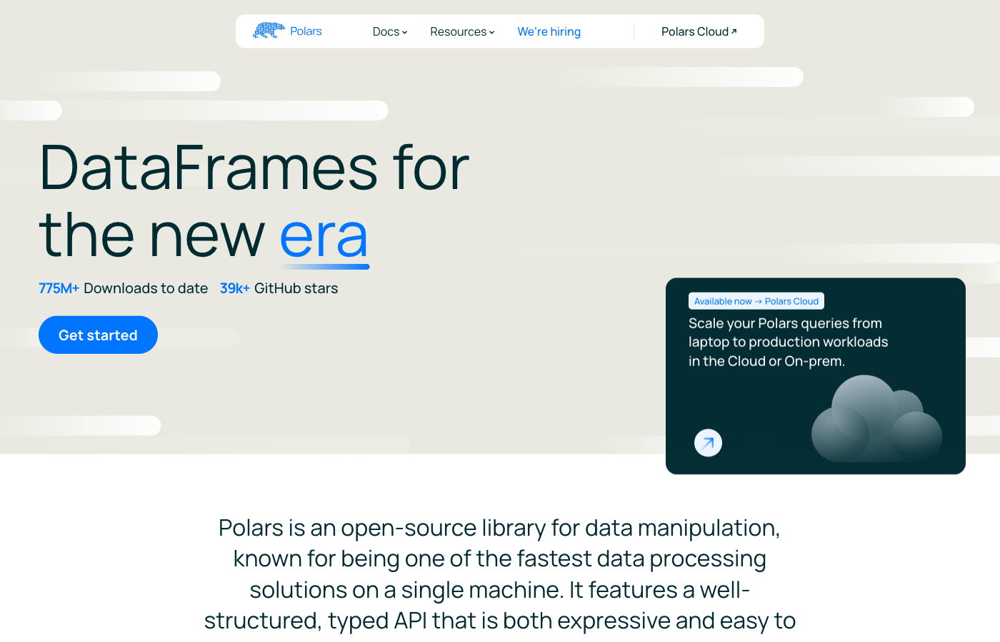
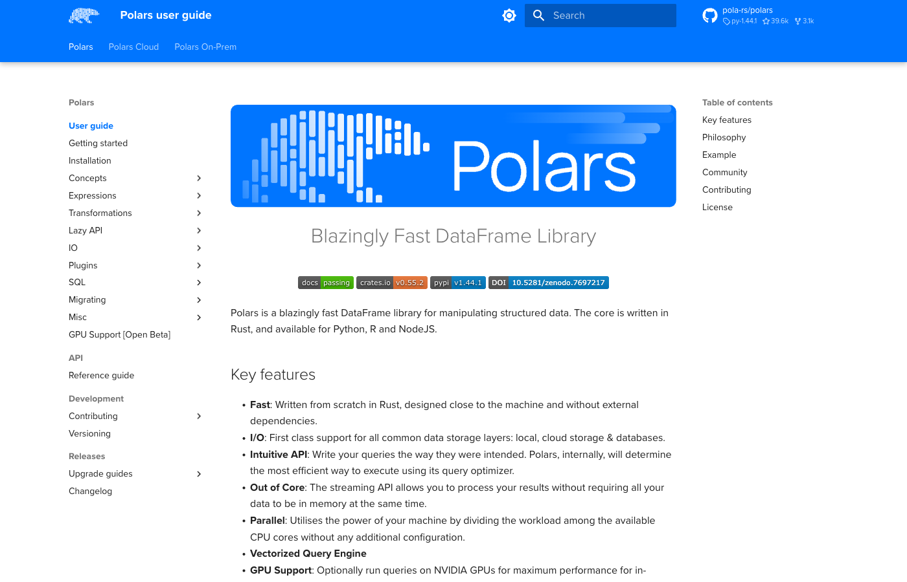
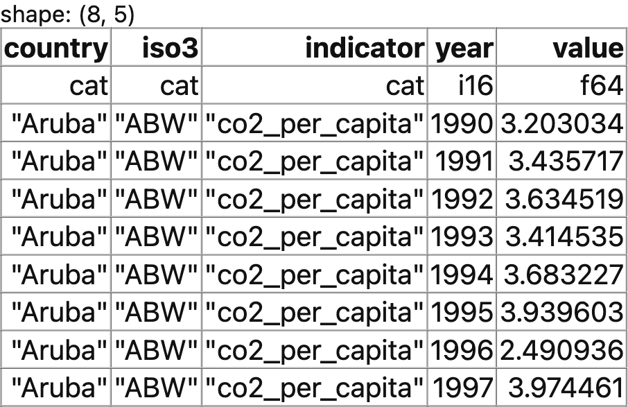
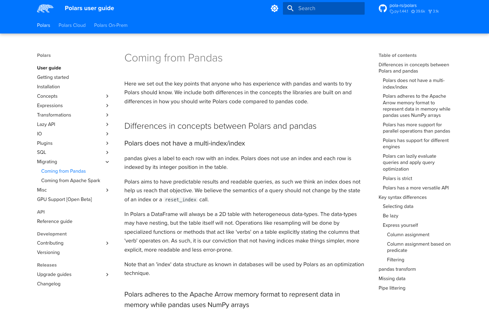
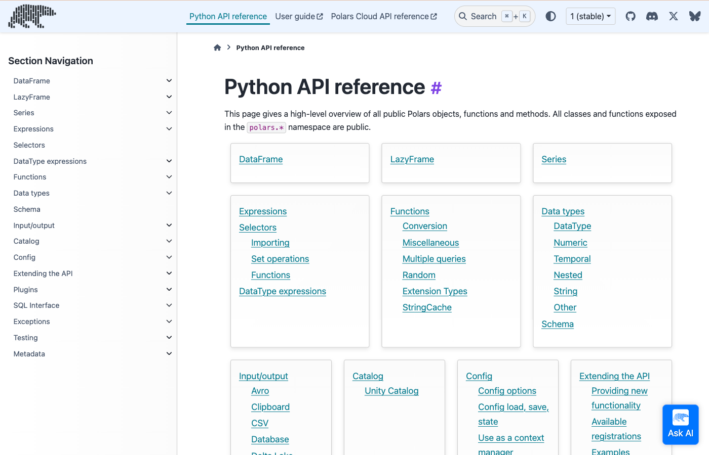

import polars as pl
print(pl.__version__)1.43.2Danilo Freire
In Lecture 02 the class voted on what Lecture 22 should cover. The choice was between keeping the Polars material and replacing it with an SQL revision in DuckDB. SQL won. I promised a tutorial for the option that lost, and this is it.
Polars is a DataFrame library. It does what pandas does, with a different engine underneath and a different way of writing the same operations. You still meet it in Lecture 22, in the benchmark against pandas, Dask and DuckDB.
By the end you will be able to read a Parquet file with Polars, select and filter it, add computed columns, group and aggregate, reshape and join, write a lazy query and read its plan, and process a file larger than memory in streaming mode. You will also be able to translate most pandas code you already write.
The tutorial assumes the pandas you learned in the course and nothing about Polars. Every code chunk runs when the document is rendered, so every output you read is real.
pandas was written in 2008 for a single processor and a Python-first design. Polars was written in 2020 in Rust, with the last fifteen years of database research already known. The design differences show up as speed.
Four of them matter to you:
Polars is not a replacement for everything. Three cases where pandas still wins:
Polars is worth learning when your files get large, when you find yourself waiting, or when you want the lazy and streaming tools pandas lacks. The two libraries convert into each other in one line, so you are never locked in.
Keep the Polars user guide open beside this tutorial. It is organised by task, and the examples are short.


You install Polars the same way you install any Python package. The instructions below assume the working Python environment you built in Tutorial 01.
Install the package first.
Install pyarrow as well. Polars needs it to convert frames to and from pandas.
If you manage your environment with conda, install from conda-forge instead.
Now verify the installation. Open Python. Run the two lines below. A version number appears.
The output of this tutorial was produced with Polars 1.43.2. Polars changes quickly, and a few method names have been renamed across versions. Everything here uses the current names.
Next, set the display options. Polars prints as much of a frame as fits, and the defaults are wider than a PDF page. These four settings keep the tables in this document readable.
polars.config.ConfigThe last line is cosmetic. Polars draws tables with box-drawing characters by default, which look good in a terminal and poorly in a PDF. ASCII_MARKDOWN replaces them with pipes and dashes. Leave that line out if you work in a terminal or a notebook.
In a Jupyter notebook you get more than plain text. Polars renders a frame as an HTML table, with the column names on the first row, the data types on the second, and the shape printed above.

We use the World Bank panel that ships with the course tutorials. It is the same file Tutorial 04 queries with SQL, so you can compare the two approaches on identical data.
Copy the file wdi_panel.parquet into a folder named data beside your script. Confirm that the path data/wdi_panel.parquet exists.
read_parquet loads the whole file into memory.
shape: (5, 5)
| country | iso3 | indicator | year | value |
| --- | --- | --- | --- | --- |
| cat | cat | cat | i16 | f64 |
|---------|------|----------------|------|----------|
| Aruba | ABW | co2_per_capita | 1990 | 3.203034 |
| Aruba | ABW | co2_per_capita | 1991 | 3.435717 |
| Aruba | ABW | co2_per_capita | 1992 | 3.634519 |
| Aruba | ABW | co2_per_capita | 1993 | 3.414535 |
| Aruba | ABW | co2_per_capita | 1994 | 3.683227 |Read the printed table carefully. It carries more than a pandas one:
cat is a categorical, i16 a 16-bit integer, and f64 a 64-bit float.The data is in long format. Each row is one country, one indicator, and one year. That is what the World Bank API returns, and what most panel data looks like before you reshape it.
read_csv works the same way for text files, guessing the types from the first rows.
Four methods describe a frame before you touch it. shape gives the dimensions as a tuple, and schema gives the column names with their types.
(59024, 5)Schema([('country', Categorical),
('iso3', Categorical),
('indicator', Categorical),
('year', Int16),
('value', Float64)])describe computes summary statistics for every column at once, including the count of missing values.
shape: (9, 6)
| statistic | country | iso3 | indicator | year | value |
| --- | --- | --- | --- | --- | --- |
| str | str | str | str | f64 | f64 |
|------------|---------|-------|-----------|----------|-------------|
| count | 59024 | 59024 | 59024 | 59024.0 | 52498.0 |
| null_count | 0 | 0 | 0 | 0.0 | 6526.0 |
| mean | null | null | null | 2006.5 | 4.3312e6 |
| std | null | null | null | 9.810792 | 4.7639e7 |
| ... | ... | ... | ... | ... | ... |
| 25% | null | null | null | 1998.0 | 4.912 |
| 50% | null | null | null | 2007.0 | 66.703836 |
| 75% | null | null | null | 2015.0 | 1070.982754 |
| max | null | null | null | 2023.0 | 1.4381e9 |Two rows deserve attention. count is the number of non-missing entries and null_count the number of missing ones. The value column has 6,526 gaps, which is normal: not every country reports every indicator every year.
glimpse prints the frame sideways, one line per column, which suits a frame with many columns.
Rows: 59024
Columns: 5
$ country <cat> Aruba, Aruba, Aruba, Aruba
$ iso3 <cat> ABW, ABW, ABW, ABW
$ indicator <cat> co2_per_capita, co2_per_capita, co2_per_capita, co2_per_capita
$ year <i16> 1990, 1991, 1992, 1993
$ value <f64> 3.20303411789078, 3.43571688721622, 3.6345192377364, 3.41453484426953
null_count() reports the missing values per column on its own, which is the null_count row of describe without the rest.
Everything in Polars is built from expressions. An expression is a small description of a column operation. It does not hold data. pl.col("value") * 2 is an expression that says “take the column named value and double it”, and it means nothing until you hand it to a frame.
This is the one idea that makes Polars feel different. In pandas you write operations on data. In Polars you write descriptions of operations and pass them to a method that applies them. The payoff arrives in the lazy section: because your query is a description, the engine can rearrange it before running it.
select picks columns and returns a new frame.
shape: (3, 3)
| country | year | value |
| --- | --- | --- |
| cat | i16 | f64 |
|---------|------|----------|
| Aruba | 1990 | 3.203034 |
| Aruba | 1991 | 3.435717 |
| Aruba | 1992 | 3.634519 |filter keeps the rows for which an expression is true.
shape: (3, 3)
| country | year | value |
| --- | --- | --- |
| cat | i16 | f64 |
|---------|------|----------|
| Aruba | 2000 | 2.968384 |
| Aruba | 2001 | 2.973567 |
| Aruba | 2002 | 3.225666 |When a chain grows too long for one line, wrap it in round brackets. Python then reads the whole block as one expression, and you avoid a backslash at the end of every line. Later examples do this.
Polars never modifies a frame in place. Each step returns a new frame, so there is no inplace= argument and no SettingWithCopyWarning.
with_columns adds a column, or replaces one of the same name. alias gives the new column its name.
shape: (3, 3)
| country | year | decade |
| --- | --- | --- |
| cat | i16 | i16 |
|---------|------|--------|
| Aruba | 1990 | 1990 |
| Aruba | 1991 | 1990 |
| Aruba | 1992 | 1990 |Arithmetic on an expression works as you expect. (pl.col("value") / 1e6).alias("pop_millions") turns raw population counts into millions.
Combine conditions with & for and, | for or, and ~ for not. Each condition needs its own brackets, because in Python & binds more tightly than >=.
shape: (3, 5)
| country | iso3 | indicator | year | value |
| --- | --- | --- | --- | --- |
| cat | cat | cat | i16 | f64 |
|---------|------|-----------------|------|--------|
| Aruba | ABW | life_expectancy | 2015 | 75.405 |
| Aruba | ABW | life_expectancy | 2016 | 75.54 |
| Aruba | ABW | life_expectancy | 2017 | 75.62 |Two expression methods shorten long conditions. pl.col("country").is_in(["Brazil", "Japan"]) tests membership in a list. pl.col("year").is_between(2018, 2020) tests a range, with both endpoints included.
pl.lit turns a constant into an expression, which is how you add a column of a fixed value: df.select(pl.lit("World Bank").alias("source")).
String methods live in a namespace called str. Three of the columns here are stored as Categorical, a compact type for repeated text, so cast them to String first.
shape: (3, 1)
| country |
| --- |
| cat |
|----------------------|
| United Arab Emirates |
| United Kingdom |
| United States |The namespace holds the methods you expect: str.contains for a regular expression, str.to_uppercase and str.to_lowercase for case, str.strip_chars for whitespace, str.len_chars for length.
when(...).then(...).otherwise(...) is the Polars if-then-else. Chain several when clauses for several branches. Polars takes the first branch that is true, so put the most specific condition first.
We label countries by the World Bank income bands, using GDP per capita in 2020.
(df.filter((pl.col("indicator") == "gdp_per_capita") & (pl.col("year") == 2020))
.with_columns(pl.when(pl.col("value") >= 13846).then(pl.lit("High income"))
.when(pl.col("value") >= 4466).then(pl.lit("Upper middle"))
.when(pl.col("value") >= 1136).then(pl.lit("Lower middle"))
.otherwise(pl.lit("Low income")).alias("income_band"))
.select(["country", "value", "income_band"]).head(5))shape: (5, 3)
| country | value | income_band |
| --- | --- | --- |
| cat | f64 | str |
|-------------|--------------|--------------|
| Aruba | 22718.229445 | High income |
| Afghanistan | 527.834554 | Low income |
| Angola | 2847.242416 | Lower middle |
| Albania | 4980.616995 | Upper middle |
| Andorra | 34536.649922 | High income |country, year and value columns for the indicator internet_users_pct, keep the rows from 2010 onwards, and show the first five.life_expectancy indicator in 2019 as Above 75 or 75 or below. Show five rows.The solutions are in Section 15.
Polars distinguishes two kinds of absent number, and the distinction is sharper than in pandas.
pandas mostly conflates the two and represents both as NaN. Polars keeps them apart, which means is_null and is_nan answer different questions.
Count the nulls in the value column.
shape: (1, 2)
| nulls | nans |
| --- | --- |
| u32 | u32 |
|-------|------|
| 6526 | 0 |There are 6,526 nulls and no NaNs. The gaps come from the World Bank, not from a failed calculation.
fill_null replaces the gaps with a value of your choice.
shape: (1, 5)
| country | iso3 | indicator | year | value |
| --- | --- | --- | --- | --- |
| u32 | u32 | u32 | u32 | u32 |
|---------|------|-----------|------|-------|
| 0 | 0 | 0 | 0 | 0 |fill_null also takes a strategy instead of a value. "forward" carries the previous value down, which is a common fix for a time series with an occasional gap. Use it with care: it invents data.
drop_nulls removes the rows that have a gap. Give it a column name to look at one column only.
sort orders the frame. descending=True reverses it, and nulls_last=True pushes the gaps to the bottom instead of the top.
shape: (3, 5)
| country | iso3 | indicator | year | value |
| --- | --- | --- | --- | --- |
| cat | cat | cat | i16 | f64 |
|---------|------|-----------------|------|--------|
| Monaco | MCO | life_expectancy | 2023 | 86.372 |
| Monaco | MCO | life_expectancy | 2019 | 86.151 |
| Monaco | MCO | life_expectancy | 2020 | 86.089 |unique removes duplicate rows.
shape: (8, 1)
| indicator |
| --- |
| cat |
|-----------------------|
| co2_per_capita |
| fertility_rate |
| gdp_per_capita |
| internet_users_pct |
| life_expectancy |
| population |
| primary_enrolment_net |
| urban_pop_pct |n_unique counts them instead of listing them: df.select(pl.col("country").n_unique()) returns 217. sample(3, seed=350) draws three random rows, and the seed makes the draw repeatable.
top_k returns the largest rows by a column, without sorting the whole frame. It is faster than sort().head() when the frame is large.
shape: (5, 5)
| country | iso3 | indicator | year | value |
| --- | --- | --- | --- | --- |
| cat | cat | cat | i16 | f64 |
|----------------------|------|-----------------|------|-----------|
| Monaco | MCO | life_expectancy | 2019 | 86.151 |
| San Marino | SMR | life_expectancy | 2019 | 85.257 |
| Hong Kong SAR, China | HKG | life_expectancy | 2019 | 85.155854 |
| Japan | JPN | life_expectancy | 2019 | 84.356341 |
| Liechtenstein | LIE | life_expectancy | 2019 | 84.160976 |group_by(...).agg(...) splits the frame into groups and computes one row per group. Inside agg you list one expression per output column.
shape: (8, 4)
| indicator | mean_value | median_value | n |
| --- | --- | --- | --- |
| cat | f64 | f64 | u32 |
|-----------------------|--------------|--------------|------|
| co2_per_capita | 4.874457 | 2.154123 | 7378 |
| fertility_rate | 3.009723 | 2.4687 | 7378 |
| gdp_per_capita | 14330.646062 | 4875.303106 | 7378 |
| internet_users_pct | 30.678003 | 17.266131 | 7378 |
| life_expectancy | 69.479362 | 71.394 | 7378 |
| population | 3.0805e7 | 5.379354e6 | 7378 |
| primary_enrolment_net | 87.585799 | 92.8047 | 7378 |
| urban_pop_pct | 57.766502 | 58.346914 | 7378 |pl.len() counts the rows in each group, including those with a missing value. pl.col("value").count() counts the non-missing ones instead, which is the difference between the two columns below.
shape: (4, 3)
| indicator | rows | with_data |
| --- | --- | --- |
| cat | u32 | u32 |
|--------------------|------|-----------|
| co2_per_capita | 7378 | 6902 |
| fertility_rate | 7378 | 7378 |
| gdp_per_capita | 7378 | 6905 |
| internet_users_pct | 7378 | 6032 |Group by more than one column by passing a list: group_by(["country", "indicator"]) gives one row per country and indicator pair.
The rows of a group_by come back in an unpredictable order, because the groups are built in parallel across cores. Add a sort when the order matters, as every example here does.
group_by collapses each group into one row and throws the detail away. over computes the same summary and attaches it to every row, which is what you want when you compare each row against its group.
Here each country’s CO2 figure for 2015 sits beside the world mean for that year, and the gap between them.
(df.filter((pl.col("indicator") == "co2_per_capita") & (pl.col("year") == 2015)
& pl.col("value").is_not_null())
.with_columns(pl.col("value").mean().over("year").alias("world_mean"))
.with_columns((pl.col("value") - pl.col("world_mean")).alias("gap"))
.select(["country", "value", "world_mean", "gap"]).head(5))shape: (5, 4)
| country | value | world_mean | gap |
| --- | --- | --- | --- |
| cat | f64 | f64 | f64 |
|----------------------|-----------|------------|-----------|
| Aruba | 4.286138 | 4.753854 | -0.467716 |
| Afghanistan | 0.249091 | 4.753854 | -4.504762 |
| Angola | 1.175039 | 4.753854 | -3.578815 |
| Albania | 1.785089 | 4.753854 | -2.968765 |
| United Arab Emirates | 24.320533 | 4.753854 | 19.56668 |over is the Polars name for what pandas calls transform and SQL calls a window function. Tutorial 04 covers the SQL version.
urban_pop_pct, compute the mean, minimum and maximum value per year. Sort by year and show the first five rows.gdp_per_capita in 2020, add a column holding each country’s value as a share of the world mean for that year. Show the five highest.The solutions are in Section 15.
pivot turns long data into wide data. on names the column whose values become new column names, index names the column that stays, and values names the numbers that fill the grid.
shape: (4, 4)
| country | gdp_per_capita | life_expectancy | fertility_rate |
| --- | --- | --- | --- |
| cat | f64 | f64 | f64 |
|---------|----------------|-----------------|----------------|
| Brazil | 8435.011433 | 74.506 | 1.653 |
| Germany | 42372.872678 | 81.041463 | 1.53 |
| India | 1806.501106 | 70.156 | 2.047 |
| Japan | 35363.299695 | 84.56 | 1.33 |unpivot reverses the operation. It was called melt in earlier versions of Polars and in pandas, and the old name now raises a deprecation warning.
shape: (4, 3)
| country | indicator | value |
| --- | --- | --- |
| cat | str | f64 |
|---------|--------------------|-------------|
| Brazil | co2_per_capita | 2.146646 |
| Brazil | fertility_rate | 1.653 |
| Brazil | gdp_per_capita | 8435.011433 |
| Brazil | internet_users_pct | 81.342694 |A join matches rows from two frames on a shared column. We build a small regions frame by hand with pl.DataFrame, which takes a dictionary of columns.
shape: (3, 2)
| iso3 | region |
| --- | --- |
| str | str |
|------|---------------|
| USA | North America |
| BRA | Latin America |
| DEU | Europe |Now build the left side: GDP per capita in 2020 for five countries.
shape: (5, 3)
| country | iso3 | gdp_per_capita |
| --- | --- | --- |
| cat | str | f64 |
|---------------|------|----------------|
| Brazil | BRA | 8435.0 |
| Germany | DEU | 42373.0 |
| Japan | JPN | 35363.0 |
| United States | USA | 59534.0 |
| South Africa | ZAF | 5570.0 |Note the asymmetry we built in. gdp2020 has Japan (JPN), which regions lacks. regions has South Korea (KOR), which gdp2020 lacks. Each kind of join treats those unmatched rows differently.
An inner join keeps only the rows that match on both sides. Japan and South Korea both disappear.
shape: (4, 4)
| country | iso3 | gdp_per_capita | region |
| --- | --- | --- | --- |
| cat | str | f64 | str |
|---------------|------|----------------|--------------------|
| Brazil | BRA | 8435.0 | Latin America |
| Germany | DEU | 42373.0 | Europe |
| South Africa | ZAF | 5570.0 | Sub-Saharan Africa |
| United States | USA | 59534.0 | North America |A left join keeps every row of the left frame. Japan stays, with a null region.
shape: (5, 4)
| country | iso3 | gdp_per_capita | region |
| --- | --- | --- | --- |
| cat | str | f64 | str |
|---------------|------|----------------|--------------------|
| Brazil | BRA | 8435.0 | Latin America |
| Germany | DEU | 42373.0 | Europe |
| Japan | JPN | 35363.0 | null |
| South Africa | ZAF | 5570.0 | Sub-Saharan Africa |
| United States | USA | 59534.0 | North America |A full join keeps every row from both frames. Both Japan and South Korea appear, each null on the side that has no match.
shape: (6, 5)
| country | iso3 | gdp_per_capita | iso3_right | region |
| --- | --- | --- | --- | --- |
| cat | str | f64 | str | str |
|---------------|------|----------------|------------|--------------------|
| Brazil | BRA | 8435.0 | BRA | Latin America |
| Germany | DEU | 42373.0 | DEU | Europe |
| Japan | JPN | 35363.0 | null | null |
| South Africa | ZAF | 5570.0 | ZAF | Sub-Saharan Africa |
| United States | USA | 59534.0 | USA | North America |
| null | null | null | KOR | East Asia |A semi join keeps the left rows that have a match, and adds no columns. Read it as a filter: “keep the countries that appear in regions”.
shape: (4, 3)
| country | iso3 | gdp_per_capita |
| --- | --- | --- |
| cat | str | f64 |
|---------------|------|----------------|
| Brazil | BRA | 8435.0 |
| Germany | DEU | 42373.0 |
| South Africa | ZAF | 5570.0 |
| United States | USA | 59534.0 |An anti join is the opposite filter: keep the left rows with no match. It is the fastest way to find what is missing from a reference table.
shape: (1, 3)
| country | iso3 | gdp_per_capita |
| --- | --- | --- |
| cat | str | f64 |
|---------|------|----------------|
| Japan | JPN | 35363.0 |# pandas: inner, left and full have direct equivalents
gdp2020.merge(regions, on="iso3", how="inner")
gdp2020.merge(regions, on="iso3", how="left")
gdp2020.merge(regions, on="iso3", how="outer")
# semi and anti have none; you write them with isin()
gdp2020[gdp2020["iso3"].isin(regions["iso3"])]
gdp2020[~gdp2020["iso3"].isin(regions["iso3"])]pl.concat stacks frames on top of each other, and the frames must have the same columns. It is pd.concat under a different spelling.
life_expectancy and fertility_rate for 2020, with one row per country, then keep the ten countries with the highest life expectancy.iso3 codes in regions that have no row in gdp2020. The trick is which frame goes on the left.The solutions are in Section 15.
Everything so far has been eager: each method ran as soon as you typed it. Lazy mode is the other half of Polars, and it is where the speed comes from on large data.
scan_parquet returns a LazyFrame instead of a DataFrame. Nothing is read and nothing is computed. You chain the same methods you already know, and the chain builds a plan. collect() runs it.
polars.lazyframe.frame.LazyFrameshape: (3, 2)
| indicator | mean_value |
| --- | --- |
| cat | f64 |
|----------------|--------------|
| co2_per_capita | 4.878001 |
| fertility_rate | 2.795683 |
| gdp_per_capita | 15664.419864 |explain() prints the plan Polars will run, after optimisation. Read it from the bottom up: the last lines happen first.
AGGREGATE[maintain_order: false]
[col("value").mean().alias("mean_value")] BY [col("indicator")]
FROM
simple π 2/2 ["indicator", "value"]
Parquet SCAN [data/wdi_panel.parquet]
PROJECT 3/5 COLUMNS
SELECTION: col("year") >= 2000
ESTIMATED ROWS: 59024Two lines carry the point.
PROJECT 3/5 COLUMNS says Polars will read three of the five columns from the file. Your query never mentions iso3 or country, so they are never loaded. This is projection pushdown, written π in relational algebra.SELECTION: col("year") >= 2000 says the year filter is applied while the file is being read, not afterwards. Old rows never enter memory. This is predicate pushdown.You wrote the filter after the scan and Polars moved it into the scan. That rewriting is only possible because the lazy chain is a description rather than a sequence of completed steps. It is also why the eager version is slower on a big file: read_parquet has already loaded all five columns and every row before your first filter runs.
sink_parquet runs a lazy query and writes the result straight to a file. The result never has to fit in memory, because it goes out in batches as it is produced.
Here is a pandas chain on the World Bank panel:
scan_parquet, filter, group_by, agg, collect. Remember that agg takes an expression, not a column name, so build it with pl.col.time.perf_counter, and print the two durations.The solution is in Section 15.
A lazy query can run in streaming mode. Polars pulls the data through in batches, so the whole file never sits in memory at once. The change to your code is one argument: collect(engine="streaming").
The World Bank panel is 460 KB, which proves nothing. We build a larger file to make the point.
The chunk below writes 20 million rows of synthetic data to a temporary Parquet file. It runs in about a second, and the file is deleted at the end of this section.
import time
import numpy as np
rng = np.random.default_rng(350)
n_rows = 20_000_000
big = pl.DataFrame({
"group": rng.integers(0, 1000, n_rows),
"value": rng.random(n_rows),
})
big.write_parquet("data/tmp_big.parquet")
del big
size_mb = os.path.getsize("data/tmp_big.parquet") / 1e6
print(f"{n_rows:,} rows written, {size_mb:.0f} MB on disk")20,000,000 rows written, 176 MB on diskNow run a filter and a grouped mean over it in streaming mode.
start = time.perf_counter()
result = (
pl.scan_parquet("data/tmp_big.parquet")
.filter(pl.col("value") > 0.5)
.group_by("group")
.agg(
pl.col("value").mean().alias("mean_value"),
pl.len().alias("n"),
)
.collect(engine="streaming")
)
elapsed = time.perf_counter() - start
print(f"{result.height} groups in {elapsed:.2f} seconds")
result.sort("group").head(3)1000 groups in 0.04 secondsshape: (3, 3)
| group | mean_value | n |
| --- | --- | --- |
| i64 | f64 | u32 |
|-------|------------|-------|
| 0 | 0.749827 | 10009 |
| 1 | 0.751829 | 10037 |
| 2 | 0.75113 | 9928 |Twenty million rows, filtered and grouped, in a fraction of a second. Delete the file now.
temporary file removed: TrueTwo caveats about what you just saw.
This file fits in RAM, so the timing does not demonstrate the streaming advantage. It shows that the streaming engine gives the right answer at a comparable speed. The advantage appears when the file does not fit: the eager version fails with a memory error and the streaming one finishes.
We also did not measure memory. Doing it properly needs a separate process and a sampler, which is more machinery than this tutorial should carry. Take the claim from the Polars documentation and from the Lecture 22 benchmark, which runs the same query on 200 million rows.
The streaming engine has been renamed across Polars versions. Older code and older tutorials write collect(streaming=True). That form is deprecated. On Polars 1.43 and later, write collect(engine="streaming").
You do not have to choose one library forever. The conversion is one method call in each direction, and it is cheap, because both libraries store data in Arrow format underneath.
(pandas.DataFrame, polars.dataframe.frame.DataFrame)to_numpy gives a plain NumPy array, which is what scikit-learn and most numerical code want.
The pattern to aim for: do the heavy work in Polars, then convert at the last moment for the tool that needs pandas. Plotting is the usual case.
Polars can also run SQL. pl.SQLContext registers frames under a name, and execute runs a query against them.
shape: (4, 2)
| indicator | mean_value |
| --- | --- |
| cat | f64 |
|--------------------|--------------|
| co2_per_capita | 4.453936 |
| fertility_rate | 2.492797 |
| gdp_per_capita | 16149.943183 |
| internet_users_pct | 64.107147 |The SQL support covers the common clauses and little beyond them. For real SQL work use DuckDB, which reads a Polars frame by its Python variable name and returns results with .pl(). Tutorial 04 covers that path in full.
The table below covers the operations you write most often. Keep it beside you for the first few scripts.
| Task | pandas | Polars |
|---|---|---|
| Read Parquet | pd.read_parquet(f) |
pl.read_parquet(f) |
| Read CSV | pd.read_csv(f) |
pl.read_csv(f) |
| First rows | df.head(5) |
df.head(5) |
| Dimensions | df.shape |
df.shape |
| Column types | df.dtypes |
df.schema |
| Summary stats | df.describe() |
df.describe() |
| Pick columns | df[["a", "b"]] |
df.select(["a", "b"]) |
| Filter rows | df[df["a"] > 1] |
df.filter(pl.col("a") > 1) |
| New column | df["c"] = df["a"] * 2 |
df.with_columns((pl.col("a") * 2).alias("c")) |
| Rename | df.rename(columns={"a": "b"}) |
df.rename({"a": "b"}) |
| Sort | df.sort_values("a") |
df.sort("a") |
| Missing values | df["a"].isna() |
pl.col("a").is_null() |
| Fill missing | df["a"].fillna(0) |
pl.col("a").fill_null(0) |
| Drop missing | df.dropna() |
df.drop_nulls() |
| Distinct values | df["a"].unique() |
df.select("a").unique() |
| Group and aggregate | df.groupby("a").mean() |
df.group_by("a").agg(pl.all().mean()) |
| Group value on each row | df.groupby("a").transform("mean") |
pl.col("b").mean().over("a") |
| Join | df.merge(other, on="k", how="left") |
df.join(other, on="k", how="left") |
| Stack frames | pd.concat([a, b]) |
pl.concat([a, b]) |
| Long to wide | df.pivot(index=..., columns=...) |
df.pivot(index=..., on=...) |
| Wide to long | df.melt(id_vars=...) |
df.unpivot(index=...) |
| If-then-else | np.where(cond, x, y) |
pl.when(cond).then(x).otherwise(y) |
Three differences to keep in mind while you translate:
set_index, reset_index and loc is done here with ordinary columns.pl.col, not inside square brackets. df["a"] still works and returns a Series, but the expression form is what chains.The Polars user guide is the place to start. Its concepts section explains expressions and contexts properly, and it is short.
The migration guide for pandas users is the official version of the phrasebook above, with more entries and an explanation of why each idiom differs.
The Python API reference lists every method, grouped by the object it belongs to. Use it when you know what you want and not what it is called.


The code below answers the “Try it yourself” tasks. Try each one before you read its solution.
Expressions, task 1. Internet use from 2010 onwards.
shape: (5, 3)
| country | year | value |
| --- | --- | --- |
| cat | i16 | f64 |
|---------|------|-------|
| Aruba | 2010 | 62.0 |
| Aruba | 2011 | 69.0 |
| Aruba | 2012 | 74.0 |
| Aruba | 2013 | 78.9 |
| Aruba | 2014 | 83.78 |Expressions, task 2. A two-way label on life expectancy in 2019.
shape: (5, 3)
| country | value | band |
| --- | --- | --- |
| cat | f64 | str |
|-------------|--------|-------------|
| Aruba | 76.019 | Above 75 |
| Afghanistan | 62.941 | 75 or below |
| Angola | 63.051 | 75 or below |
| Albania | 79.467 | Above 75 |
| Andorra | 84.098 | Above 75 |Group by, task 1. Urban population share by year.
shape: (5, 4)
| year | mean_pct | min_pct | max_pct |
| --- | --- | --- | --- |
| i16 | f64 | f64 | f64 |
|------|-----------|----------|---------|
| 1990 | 52.729202 | 5.274941 | 100.0 |
| 1991 | 53.130949 | 5.362874 | 100.0 |
| 1992 | 53.435625 | 5.663347 | 100.0 |
| 1993 | 53.720957 | 6.400027 | 100.0 |
| 1994 | 53.995936 | 6.999245 | 100.0 |Group by, task 2. Each country’s GDP per capita as a share of the world mean.
shape: (5, 3)
| country | value | share_of_mean |
| --- | --- | --- |
| cat | f64 | f64 |
|-------------|---------------|---------------|
| Monaco | 161262.850134 | 9.985351 |
| Luxembourg | 105274.182261 | 6.518548 |
| Bermuda | 98846.445808 | 6.120544 |
| Isle of Man | 86595.06761 | 5.361943 |
| Switzerland | 86293.918344 | 5.343295 |Reshaping, task 1. Life expectancy and fertility side by side in 2020.
shape: (10, 3)
| country | fertility_rate | life_expectancy |
| --- | --- | --- |
| cat | f64 | f64 |
|----------------------|----------------|-----------------|
| Monaco | 2.38 | 86.089 |
| Hong Kong SAR, China | 0.883 | 85.496341 |
| Japan | 1.33 | 84.56 |
| Macao SAR, China | 0.841 | 84.129268 |
| ... | ... | ... |
| Norway | 1.48 | 83.209756 |
| Australia | 1.581 | 83.2 |
| Gibraltar | 1.907 | 83.07 |
| Iceland | 1.72 | 83.063415 |Reshaping, task 2. Region codes with no GDP row. regions goes on the left.
shape: (1, 2)
| iso3 | region |
| --- | --- |
| str | str |
|------|-----------|
| KOR | East Asia |Lazy mode. The pandas chain rewritten in lazy Polars, with both versions timed.
import pandas as pd
start = time.perf_counter()
pdf_all = pd.read_parquet("data/wdi_panel.parquet")
out_pandas = (
pdf_all[pdf_all["year"] >= 2000]
.groupby("country", observed=True)["value"]
.mean()
)
pandas_time = time.perf_counter() - start
start = time.perf_counter()
out_polars = (
pl.scan_parquet("data/wdi_panel.parquet")
.filter(pl.col("year") >= 2000)
.group_by("country")
.agg(pl.col("value").mean().alias("mean_value"))
.collect()
)
polars_time = time.perf_counter() - start
print(f"pandas: {pandas_time:.3f} s")
print(f"polars: {polars_time:.3f} s")
out_polars.sort("country").head(3)pandas: 0.050 s
polars: 0.002 sshape: (3, 2)
| country | mean_value |
| --- | --- |
| cat | f64 |
|-------------|---------------|
| Afghanistan | 4.3732e6 |
| Albania | 369446.218002 |
| Algeria | 4.9043e6 |The three verbs, in order: filter keeps the recent rows, group_by forms the groups, agg summarises each one. Both timings include reading the file, which is the fair comparison, because the lazy version reads only the columns and rows it needs.
On a file this small the absolute numbers change from run to run and mean little. The gap opens up on data a thousand times larger, which is what Lecture 22 measures.
That is the end of the tutorial. You installed Polars, read a real dataset, worked through expressions, groups, joins and lazy queries, and ran a streaming aggregation over 20 million rows. Keep this document as a reference, and open the user guide when you meet something it did not cover.